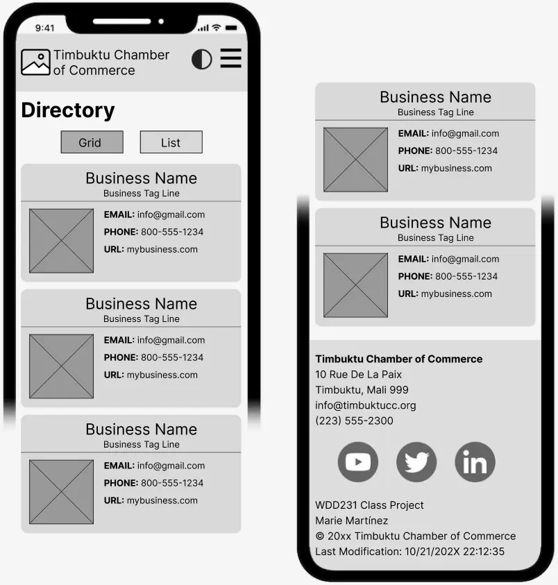

Site Name
Ishtar Station Chamber of Commerce
Site Purpose
This website will serve as a resource hub for businesses in Ishtar Station, Venus. The site will provide information on local events, host networking opportunities, create business directories, and encourage local shopping. It aims to promote local economic growth, support local businesses, and foster a sense of community between the businesses.
Target Market
The target market for this website is local business owners and entrepreneurs in Ishtar Station, Venus. The site will also be useful for residents of Ishtar Station who are interested in supporting local businesses and staying informed about local events and opportunities.
Site Goals
- Provide a platform for local businesses to connect and network.
- Promote local events and initiatives.
- Create a comprehensive business directory for Ishtar Station.
- Encourage residents to shop locally and support their community.
User Personas
- Entrepreneur - A new business owner in Ishtar Station who is looking for networking opportunities and resources to help grow their business.
- Corporate Executive - A corporate executive who is interested in investing in local businesses and wants to stay informed about the local business climate.
- Resident - A resident of Ishtar Station who is interested in supporting local businesses and staying informed about local events.
- Colonist - A colonist on Venus who is interested in the local community and wants to be involved in local activities.
Scenarios
- Entrepreneur - The entrepreneur visits the site to find networking events and resources to help grow their business. They use the business directory to connect with other local businesses.
- Corporate Executive - The corporate executive uses the site to stay informed about local business trends and opportunities for investment. They attend local events to meet potential business partners.
- Resident - The resident uses the site to find local events and initiatives to support. They use the business directory to find local businesses to shop at and support.
- Colonist - The colonist uses the site to learn about the local community and get involved in local activities. They attend events and participate in community initiatives to learn about the local culture and way of life.
SEO Plan
- Use relevant keywords in the website content, meta tags, and headings.
- Optimize images with descriptive alt text and file names.
- Create a sitemap and submit it to search engines.
- Build backlinks from reputable local business websites and directories.
- Regularly update the website with fresh content, such as blog posts and event announcements.
Design Brief
Primary Color: #2F3061
Secondary Color: #FFE253
Tertiary Color: #8D9FB0
Background Color: #F7FFF7
Text Color: #343434
Font: Lato, sans-serif
Site Map

Wireframes
Desktop

Mobile
